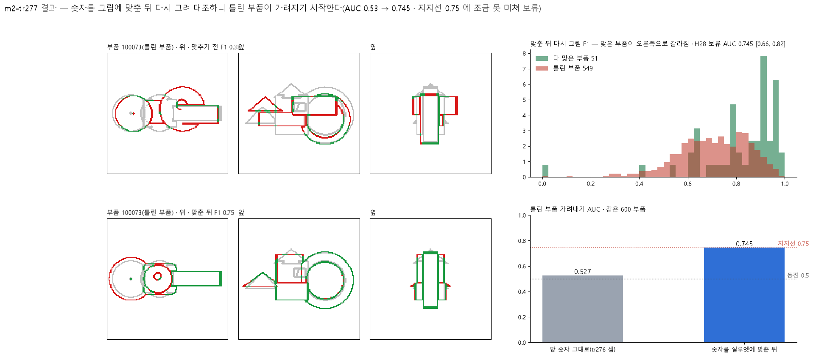

실험 m2_tr0277_h028_맞춰다시
목표 G1.2 view 모음 → 파츠별 CAD code(CadQuery · 그 전 「3 면도 → 파츠별 CAD」 · 지금 M2 는 위 · 앞 · 옆 고정 세 장만 받음 → 아무 각도 N 장으로 바꿀 것 · 11-20) · G1 첫 제품 — 피규어 · 메카 사진 여러 장 + 치수 → 숨은선 3 면도 + 파츠별 CAD · G0 임의의 이미지 → CAD 코드 · 빌린 가정 3: 생성기기하 · 정답3D · 정사영 · 갚는 계획: 진단 · 정답 3면도 · 생성기 부품 · 몸 3 개 이상 600 부분집합 — 가려내면 종류 후보마다 맞추고 다시 그려 가장 같은 것을 고르는 고침(Fi) → 흐린 view · m1 view 로 버팀(Sc) · 목표 시험지 값: 안 잼 (!)
망이 낸 숫자(자리 · 치수)를 그림 실루엣에 맞춘 뒤 가려짐까지 다시 그려 입력과 대조하면, 처음 보는 부품 중 틀린 부품을 가려내나?
판정 · H28 보류(AUC 0.745 [0.66, 0.82] · 지지선 0.75 에 조금 못 미침) — 숫자를 그림 실루엣에 맞춘 뒤 다시 그려 대조하면 틀린 부품이 가려지기 시작(같은 부품 맞추기 전 0.53) · F1 0.33 → 0.73 · 보존 구조 대조는 숫자를 맞춘 뒤라야 종류를 봄 · 다음: 몸마다 종류 후보를 바꿔 맞추고 다시 그려 가장 같은 것을 고르는 고침(Fi)
| 가설 | 주장 | 결과 | 근거 |
|---|---|---|---|
| H28 | 숫자를 그림 실루엣에 맞춘 뒤 다시 그린 그림과 입력의 F1 은 틀린 부품을 가려내는 자다 | 보류 | 같은 600 부품 맞추기 전 AUC 0.527 → 뒤 0.745 · 다시 그림 F1 가운데 0.326 → 0.727 · 맞춘 뒤 맞은 0.879 · 틀린 0.713 · F1 과 자리짝종류 순위 상관 0.071(tr276) → 0.356 · 맞춤 BCE 0.75 → 0.10(앞 300) · 0.71 → 0.09(뒤 300) · 못 지음 2 |
분석
한 줄로
물음: m2-tr276 에서 망 숫자 그대로 다시 그리면 숫자 어긋남이 종류 틀림을 덮었다. 숫자(자리 · 치수)를 세 장 실루엣에 맞춘 뒤 다시 그려 대조하면 틀린 부품을 가려내나?
답: 가려지기 시작한다 — 판정은 보류. 같은 600 부품에서 AUC 가 0.53 → 0.745 로 올랐고, 다시 그림 F1 은 0.33 → 0.73 이다. 맞은 부품은 0.88, 틀린 부품은 0.71 로 갈라진다. 미리 정한 지지선 0.75 에 0.005 모자랐다.
왜 이 실험을 했나
사용자 제안(나누기 전후로 보존되는 구조)을 tr275(윤곽 안 · 약함) · tr276(다시 그려 대조 · 숫자 어긋남에 덮임)으로 봤다. 숫자를 먼저 맞추면 남는 차이가 종류 틀림을 드러낼 것이라 봤다.
바꾼 것 하나
다시 그리기 전에 숫자를 맞췄다. 망의 종류 · 축 · 있음은 그대로, 자리 · 치수만 세 장 채운 실루엣(48²)에 부드러운 안팎(맞춤267.그리기)으로 200 걸음 맞췄다. 위 = (x, y) · 앞 = (x, z) · 옆 = (y, z) · 창 ±0.55 — 정답 숫자로 그린 실루엣이 입력과 IoU 0.98 로 겹치는 것을 먼저 확인했다. 맞추기가 느려 처음 보는 몸 3 개 이상 앞 600 부품만 썼다. 카드는 돌리기 전에 커밋했다(a6e05f54).
결과

| 같은 600 부품(다 맞은 51) | 맞추기 전 | 맞춘 뒤 |
|---|---|---|
| 틀린 부품 가려내기 AUC | 0.53 | 0.745 |
| 다시 그림 F1 가운데 | 0.33 | 0.73 |
| F1 과 종류 맞음 순위 상관 | 0.07 | 0.36 |
| 가설 | 결과 | 판정선 | 판정 |
|---|---|---|---|
| H28 맞춘 뒤 다시 그림 F1 으로 가려내기 | AUC 0.745 [0.66, 0.82] | ≥ 0.75 이고 아래 > 0.65 지지 · 위 < 0.6 기각 | 보류 |
Lean: 보류라 칸이 안 채워져 「판정 못 채움」.
왜 이렇게 나왔나
확인한 것
- 숫자를 맞추면 다시 그림이 입력과 크게 가까워진다(F1 0.33 → 0.73). 맞은 부품은 0.88 까지 가고, 틀린 부품은 0.71 에 남는다 — 남는 차이가 종류 틀림이다.
- 사례(부품 100073)도 맞춘 뒤 F1 0.38 → 0.75 지만, 틀린 몸(원기둥)의 선은 빨갛게 남는다.
짐작 (아직 확인 안 함)
- 실루엣만 맞춰 안쪽 선(구멍 · 계단 · 컵 안)은 덜 맞는다. 안쪽 선까지 맞추면 더 갈라질 것이다.
한계
- 600 부분집합 · 맞은 부품 51 개라 구간이 넓다.
- 48² · 시선 표본 48 · 200 걸음 · 실루엣만 맞춤.
배운 것과 다음
보존 구조 대조는 숫자를 맞춘 뒤라야 종류 틀림을 본다(AUC 0.53 → 0.745 · 보류).
- 고침(Fi): 몸마다 종류 후보(망의 2 · 3 순위)를 바꿔 맞추고 다시 그려, 입력과 가장 같은 것을 고른다 — 진척판 자리짝종류가 바탕 0.53 을 넘는지.
- 자(Me)를 세게: 안쪽 선까지 맞추기 · 해상도 올리기.
실험 기록
- 카드(돌리기 전 커밋 a6e05f54 · H28_A_Me · 식 · 판정식 · Lean 증명 나무 하네스/lean/증명나무_tr0277.H28.png) · 맞다시277.py(검사 · 흐름 · 맞추기 · 그리기 · 재기 · 그림) · 잼.json · 흐름.png · 결과.png · 원본 out/설명/캐드부품/모델277(맞춤_0_300 · 300_600 · 다시 · F후)
- 처음 64² · 시선 96 은 8 GB GPU 에 넘쳐(OOM) 48² · 48 로 낮추고 검사(IoU 0.98) 뒤 돌림.